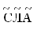

|
Непозиционная система счисления - система счисления, в которой значение символа (цифры) четко определено и не зависит от ее положения при записи числа.
Записывая результаты счета точками, полосками, насечками и т.д. люди стремились группировать их по 3, 4, 5, 7. Такая группировка облегчала счет. В древности чаще всего считали на пальцах, а поэтому предметы стали группировать по 5 или 10. В дальнейшем десяток десятков получил особое название (в русском языке - сотня), десяток сотен - свое название и т.д. Если при пересчете оказывалось 3 сотни, 6 десятков и еще 2 предмета, то трижды повторяли знак для сотни, шесть раз - знак для десятка и два раза - знак для единицы. Знаки для единиц, десятков и сотен были не похожи друг на друга. При такой записи числа знаки можно располагать в любом порядке, и значение записанного числа при этом не менялось. Поскольку в такой записи числа положение знака не играет роли, подобные системы счисления и стали называть непозиционными. Непозиционными были системы счисления у древних египтян, греков и римлян. Непозиционные системы счисления были более или менее пригодны для выполнения операций сложения или вычитания, но совсем не удобны для умножения и деления.
 Римская система счисления. Римская система счисления.
В римской системе счисления для обозначения чисел используются заглавные латинские буквы, являющиеся "цифрами" этой системы счисления:
| 1 |
5 |
10 |
50 |
100 |
500 |
1000 |
| I |
V |
X |
L |
C |
D |
M |
Число в римской системе счисления обозначается набором стоящих подряд "цифр". Значение числа находится как сумма значений всех "цифр", если в записи числа "цифры" расположены в порядке возрастания. В случае, если "меньшая цифра" стоит перед "большей", то из значения большей вычитается значение меньшей "цифры" (вычитаться может только одна "цифра").
Например, LXI - это 61, а , LIX - 59.
Славянская система счисления.
В славянской системе нумерации для записи чисел использовались все буквы алфавита, правда, с некоторым нарушением алфавитного порядка. Буквам старой славянской азбуки были присвоены цифровые значения: от 1 до 10, затем через 10 до 100 и через 100 до 1000. Используя не более трех букв можно было записать любое натуральное число от 1 до 1110. Например, число 231 записывалось  (C - 200, Л - 30, А - 1).
Над буквами, обозначавшими числа, ставился специальный знак титло "~" , для того, чтобы отличить числа от обычных слов.
|


 Непозиционные системы счисления
Непозиционные системы счисления